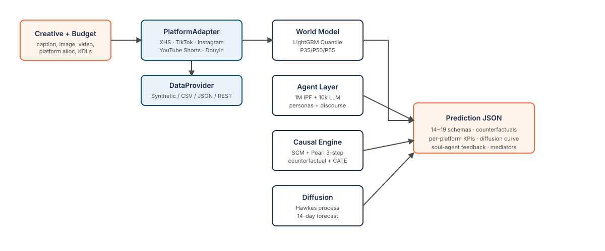

We present Augur, an open-source causal engine for
launch prediction — built for makers, solo brand owners, and small
creator teams who want to rehearse a product or content launch before
they spend on it. Augur integrates four primary
modeling components: (i) a Causal Transformer world model with
explicit treatment–covariate–outcome factorization, DAG-aware attention,
per-arm counterfactual heads, and representation-balancing regularization
drawing from CaT[1],
CausalDAG-Transformer, TARNet/Dragonnet[2],
BCAUSS, and CInA[3];
(ii) a Causal Neural Hawkes temporal point process with
intervention-aware intensity for 14-day diffusion rollouts, building on
Mei & Eisner[4],
Zuo et al.[5], and
Geng et al.[6];
(iii) a hand-designed 64-node causal graph with do-calculus[7]
interventions — the graph encodes long-term launch feedback (e.g.
repeat-purchase → brand equity → CPM bid → next-cycle impression),
evaluated as a cyclic-SCM fixed point, with a fully time-unrolled DAG
formulation available as an acyclic alternative;
and (iv) a population of one million IPF-calibrated virtual consumers with
10k LLM-driven persona agents. The framework is released under Apache-2.0
with a deterministic synthetic training corpus, a pretrained LightGBM
quantile baseline, and a reference Xiaohongshu (XHS) platform
adapter. TikTok, Instagram, YouTube Shorts, and Douyin ship as
MVP adapters driven by the synthetic LightGBM baseline; real-panel
calibration lands in v0.5.
Launch prediction has long oscillated between two extremes. Academic
simulators model causal structure but rarely ship; commercial predictors
ship but rarely explain. Augur is an attempt to bridge the gap:
counterfactual reasoning as a first-class interface, packaged so a single
maker can rehearse a launch from a pip install.
Prior open-source efforts in causal inference have focused on either
estimator libraries (DoWhy, EconML, CausalML) or observational-study
pipelines. Augur differs by assembling an end-to-end digital twin:
agent-based exposure simulation, a causal world model with per-treatment
counterfactual heads, and an intervention-aware diffusion forecaster,
unified behind a single prediction API. The design prioritizes three
properties: (i) causal fidelity — treatment effects are
estimated under explicit do-interventions rather than inferred
post-hoc from correlational features; (ii) extensibility —
platforms and data providers form two independent axes so that a single
platform can consume multiple data sources without changing its world
model; and (iii) reproducibility — synthetic data, pretrained
baseline weights, and deterministic seeds all ship with the repository.
Augur is organized as six composable engines, each separable and individually replaceable through a registry. Primary models are research-grade and ship architecture + training + inference code today (v0.2.0-alpha); pretrained weights land with OrancBench v0.5. Classical baselines accompany every primary model so that ablation comparisons remain tractable on commodity CPUs.
A six-layer, 256-dimensional encoder with a 7-modality feature tokenizer (creative embedding, platform, KOL, demographic, budget, time, class token). Input tokens carry a type embedding distinguishing covariates, treatments, and outcomes, following the CaT formulation of Melnychuk et al.[1]. Multi-head self-attention uses an additive DAG bias derived from the 64-node Pearl SCM, with a per-head learnable gate controlling the strength of the topological restriction. Output heads include a factual quantile regressor (P35 / P50 / P65) per KPI and a per-arm counterfactual regressor in the spirit of TARNet[2] and Dragonnet. A representation-balancing loss (biased HSIC[8] or adversarial IPTW) decorrelates the learned representation from the discrete treatment assignment, reducing confounding when treatment is non-random. An optional in-context amortization hook, inspired by CInA[3], enables zero-shot causal inference conditional on a set of prior campaigns.
A four-layer Transformer temporal point process for 14-day cascading
engagement. Events carry both a type (impression, like, comment, share,
save, conversion) and a treatment identifier (organic versus paid boost),
with a softplus intensity decoder. Training minimizes negative log
likelihood with a piecewise-constant compensator estimator. At inference
time, the model supports counterfactual rollouts under do
interventions such as mute_at_min (terminate boosting at a
chosen time) and treatment_boost_factor (scale the intensity
of paid events). The construction follows the neural Hawkes work of Mei
and Eisner[4], the Transformer
Hawkes process of Zuo et al.[5],
and the counterfactual temporal-point-process formulation of Geng
et al.[6].
A hand-designed directed acyclic graph with 64 nodes and 117 edges,
covering the marketing funnel from macro environment through exposure,
awareness, consideration, conversion, repeat purchase, and brand memory.
Mediators encode group discourse and information cascades. The graph
serves two roles: it generates the attention bias used by the Causal
Transformer, and it defines the structural equations evaluated under
Pearl's three-step do-calculus[7]
(abduction → action → prediction).
One million virtual consumers are generated by iterative proportional fitting (Deming–Stephan 1940) against published demographic marginals. Each agent carries demographic attributes, platform-specific engagement priors, niche affinities, and time-of-day activity curves. At run time, the top 10k agents most relevant to a scenario are upgraded to LLM-backed personas for qualitative feedback, with request coalescing to bound inference cost.
A LightGBM[9] quantile world model (three P35 / P50 / P65 regressors per KPI) and a classical exponential-kernel Hawkes process[10] ship alongside the primary models as fast baselines. Both run on CPU at sub-millisecond latency and serve as ablation anchors. A pretrained LightGBM pkl trained on the shipped synthetic corpus accompanies the v0.2.0-alpha release (R2 of 0.89, 0.78, 0.73, and 0.69 for impressions, clicks, conversions, and revenue respectively).
Platforms and data sources are orthogonal. The PlatformAdapter
abstract class encodes platform-specific semantics (what constitutes a
post, a conversion, a KOL); the DataProvider abstract class
encodes data provenance. A single platform can be driven by multiple
providers (synthetic, CSV, JSON dump, OpenAPI endpoint, or custom) without
changes to the platform logic, and vice versa.

Creative + Budget → PlatformAdapter (backed by
a pluggable DataProvider) → Causal Transformer World Model
(factual + per-arm counterfactual quantile predictions) with parallel
agent-layer simulation → 64-node Pearl SCM counterfactual evaluation →
Causal Neural Hawkes 14-day diffusion with intervention rollouts → a
structured JSON response spanning 14–19 schemas.
Table 1 reports the pretrained LightGBM quantile baseline shipped
with v0.2.0-alpha, trained on the deterministic 2k-scenario synthetic
corpus (data/synthetic/scenarios_v0_1.jsonl). Numbers reflect
performance on a 10% held-out split of synthetic data and should not be
read as real-world calibration. For real launch accuracy, train the same
architectures on your own campaign data via the DataProvider
interface (see the repository).
| KPI | Pinball P35 | Pinball P50 | Pinball P65 | R2 P50 |
|---|---|---|---|---|
| impressions | 10.56 | 12.53 | 12.32 | 0.886 |
| clicks | 0.251 | 0.289 | 0.279 | 0.778 |
| conversions | 0.002 | 0.002 | 0.003 | 0.727 |
| revenue | 0.777 | 0.895 | 0.914 | 0.687 |
The shipped synthetic data and pretrained LightGBM pkl together make up a plug-and-play deployment: a clone plus an LLM API key is sufficient for the full prediction pipeline. No separate data generation or training step is required.
# 1. Clone and install. git clone https://github.com/horton2048/augur.git cd augur pip install -e '.[dev]' # 2. Optional: research-grade models (PyTorch, CPU or GPU). pip install -e '.[ml]' # 3. Run. The LightGBM baseline + synthetic agents work without an LLM; # set LLM_API_KEY to enable the persona layer (soul agents). LLM_API_KEY=sk-... python -m uvicorn oransim.api:app --port 8001
Training the research-grade Causal Transformer and Causal Neural Hawkes on the shipped synthetic corpus is a single command each:
python -m backend.scripts.train_transformer_wm \ --data data/synthetic/scenarios_v0_1.jsonl --epochs 50 python -m backend.scripts.train_neural_hawkes \ --data data/synthetic/event_streams_v0_1.jsonl --epochs 30
| Platform | Region | Status | World Model | Milestone |
|---|---|---|---|---|
| Xiaohongshu (XHS) | Greater China | v1 live | Causal Transformer + LightGBM | — |
| TikTok | Global | MVP (synthetic) | LightGBM baseline | v0.5 · real panels |
| Instagram Reels | Global | MVP (synthetic) | LightGBM baseline | v0.5 · real panels |
| YouTube Shorts | Global | MVP (synthetic) | LightGBM baseline | v0.5 · real panels |
| Douyin | Greater China | MVP (synthetic) | LightGBM baseline | v0.5 · real panels |
| Twitter / X | Global | planned | — | v0.5 |
| Bilibili | Greater China | planned | — | v1.0 |
| Global | planned | — | v1.0 |
The release trains exclusively on synthetic data for transparency and
reproducibility — so every prediction is auditable and nothing is hidden
behind a black box. When you're ready for real launch decisions, point
Augur at your own data (CSV, JSONL, a REST endpoint, or your database)
through the DataProvider interface and retrain the same
architectures on your own campaigns. No license, no sign-up — it's all
Apache-2.0 and it all runs locally.
@software{augur2026,
title = {Augur: Launch Foresight for Makers},
version = {0.2.0-alpha},
date = {2026-04-18},
url = {https://github.com/horton2048/augur},
}